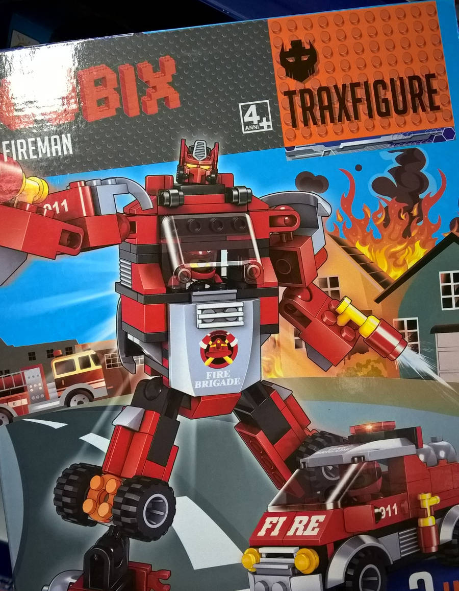
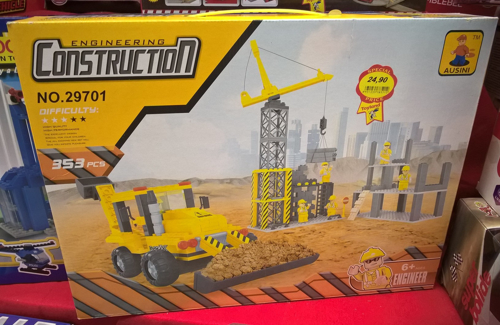
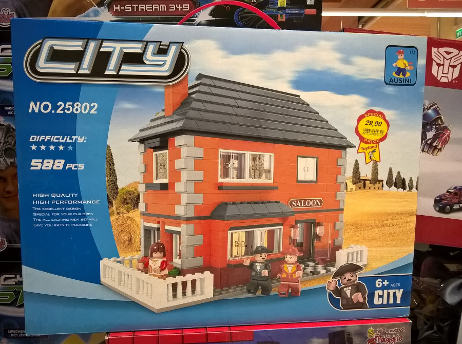
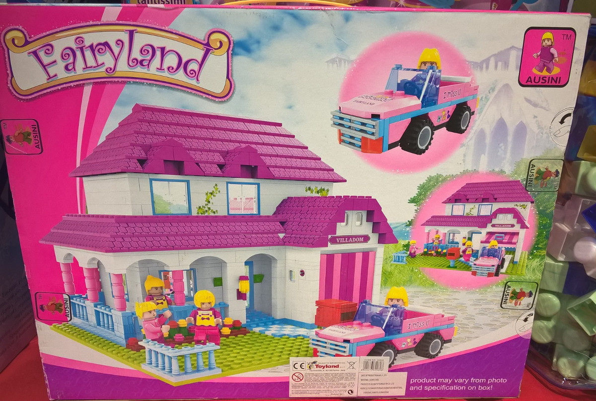
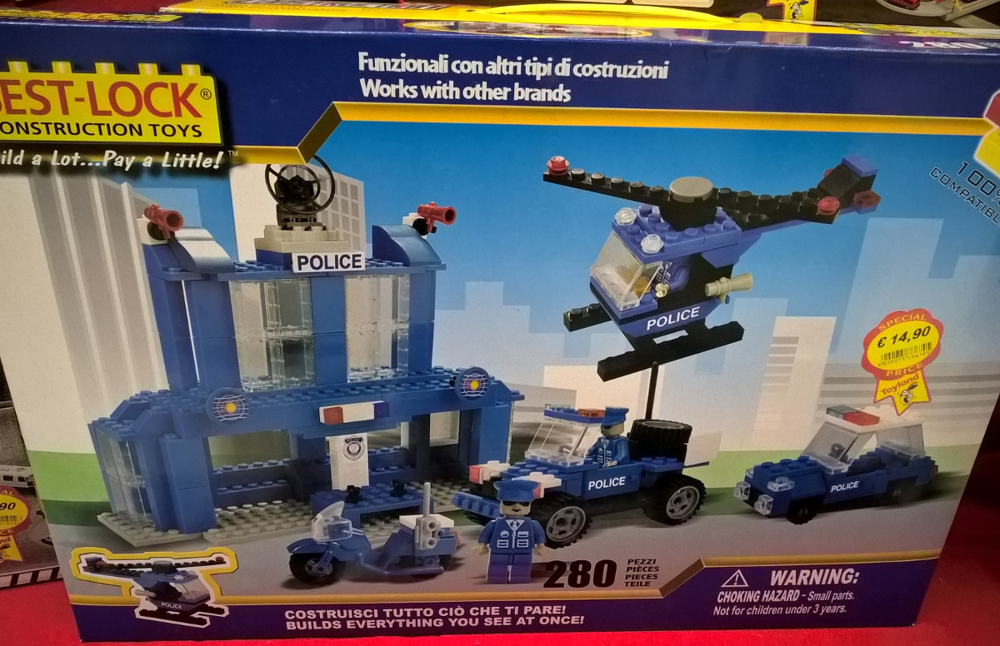

Robot ciofeche, la vendetta.
Come speravo, non sono stato deluso, e ho trovato il parente di questa ciofeca recensita sette mesi or sono:: il Cubix Fireman Traxfigure, un kit 2-in-1 che può diventare o macchinina del capo dei pompieri (un evergreen tra i clonatori) o possente robot.

Analogamente al suo fratellino più piccolo, questo signore si presenta con una confezione ben fatta. E, come sempre, la Cubix manca di segnalare qual è il suo fornitore. Per fortuna, la scatola era aperta, e non chiusa dal pezzettino di scotch che usano di solito. Non ho fotografato il libretto d'istruzioni, ma era ben fatto. Devo dire che il reparto design del modello ci ha messo del suo per fare il Robot, che è decisamente caruccio.
L'interrogativo in questo caso è: sarà della Qiao Le Tong (ovvero un coso incompatibile con alte probabilità di pezzi errati)? La risposta è sì.. E quindi, se vedete questo e la sua sorella macchina della polizia, lasciateli dove sono. Richiedono le immensely strong hands e sono incompatibili coi vostri lego, peggio che i BanBao. Cubix, affidati alla Gudi, che fa modelli decisamente migliori.
Sorpresona!
Dopo aver scosso la testa desolato, me ne sono andato a fare la spesa. Ma, sorpresa! Natale si avvicina, e il supermarket si è affidato ad un grosso rivenditore di una città vicina (lascio a voi il piacere della scoperta) e si è rifornito di materiale ludico per le Feste. Nella pigna, si trova un bel po' di materiale interessante: tre modelli Ausini (marca che gode di un buon ranking qualitativo fatta eccezione per le minifig) e Best Lock. Facciamo una cosa che di solito non si fa, e giudichiamo dalla copertina.

Questo è il Cantiere Ausini. 353 pezzi, 24.90 EUR, quindi un prezzo altino per un clone. Interessante la gru e le infrastrutture. Niente di che la ruspa. Cinque minifig decisamente urfide. Voto: 5,5/10-, perché costa decisamente troppo per essere 1) clone e 2) avere un costo di 7 centesimi per pezzo, più o meno come la stazione di polizia Lego.

Cominciamo a ragionare: Il costo è di 5 cent/pezzo, il modello è una saloon senza infamia e senza lode. Le minifig sono appena meglio. Carine le decorazioni angolari. Però qualcuno mi deve spiegare che cosa c'entra uno scenario da campagna toscana col Far West (date un'occhiata più approfondita alla foto). Forse qualcuno nella lontana Cina ha letto dei butteri maremmani che diedero la paga a Buffalo Bill? Tornando al modello, il voto è un 6,5/10 per il costo da clone dei singoli pezzi e per l'aspetto passabile.

Restando in un mood toscano, questo modello è da regalare alle piccole tifose della Fiorentina, dal momento che il viola abbonda in questo modello. Coloracci a parte, il design della casa è ben fatto e rifinito, la macchina decisamente meno. Non ho fotografato l'etichetta, ma mi sembrava che ci fossero 737 pezzi per 34,90, il che da un ottimo costo di 4,73 centesimi pezzo. Questo modello si prende, dopo aver indossato gli occhiali da sole, un bel 6,75/10, per il design della casa e il rapporto costo/n. pezzi. Viene tuttavia penalizzato dall'aspetto della macchinina e dalla sovrabbondanza di viola, fucsia e rosino. Onorevoli designer dell'Ausini, ci sono altri colori pastello nello spettro del visibile...

Finiamo con l'ultima scelta. Questo modello vuole essere l'alternativa low-cost alla sempiterna Stazione della Polizia Lego. Il problema è che, come si vede dalla foto, l'apparenza del modello è, semplicemente, brutta. L'edificio e l'elicottero sono mediocri, inferiori al design lego anni '70. La jeep è brutta e la macchina non si può proprio vedere. Le minifig, poi... zombie!.
Non solo: dalla foto si vede che la plastica non è questo gran che, anzi. Il guaio è che il costo del singolo pezzo non è neanche fra i più bassi: 5,3 centesimi pezzo, le Ville Ausini lo superano alla grande, sia come aspetto che come qualità. La sola cosa che lo salva è che la confezione dichiara la compatibilità con le altre marche.
Il mio voto è 3,5/10. Design, minifig e plastica: l'insieme concorre nel portare il tutto ben sotto la sufficienza.
In conclusione:
Il robot Cubix, per quanto caruccio e tentatore è da ignorare: l'incompatibilità è semplicemente inaccettabile. Anche la stazione della polizia Best-Lock è da lasciare lì dov'è. Per quanto riguarda Ausini, posto che le minifig non si possono vedere, due modelli su tre hanno un certo valore: il saloon come casa in sé, la villa fairyland (se riuscite a superare lo scoglio cromatico viola/fucsia) per il design generale. I prezzi non sono bassi: io, ad esempio, non mi sono arrischiato a spendere 29 euri per il saloon, anche perché con 29 eur e un'occhiata nei negozi online si possono trovare ottimi prezzi.
Per quanto riguarda gli importatori, consiglierei di dedicarsi alle gamme non coperte dalla Lego, tipo le serie militari, o a quelle coperte poco e male (tipo lo spazio e i treni). Ausini ha una sua serie di treni che non costano poco, ma sicuramente potrebbero rappresentare un'alternativa medium-cost praticabile (qui una recensione di un treno Ausini). Poi, posso capire che l'importatore cerchi la classica poca spesa molta resa, però un pensierino ad alcuni treni Ausini per un prezzo attorno ai 50 EUR ce lo farei...